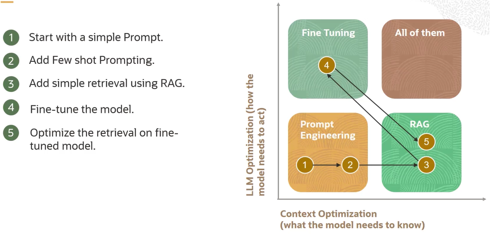
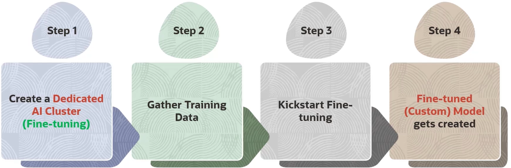

Generative AI
Generative AI (IA Generativa)¶
Diferente dos outros aprendizados supervisionados, a IA Generativa foca em entender a distribuição da base dos dados e criar novos exemplos
Large Language Model LLM (Modelo de Linguagem Grande)¶
O que são LLMs?¶
O primeiro L referente ao Large se deve somente ao número de parâmetros treináveis do modelo, sendo em suma igual aos outros tipos de modelos de linguagem, os Language Model LM e os Small Language Model SLM
Mesmo assim, o termo LLM ainda é usado para modelos de linguagem não consideradas grandes, como o Bidirectional Encoder Representations for Transformers BERT
É um modelo de texto probabilístico, computando uma distribuição em um dado vocabulário, um set de palavras, atibuindo probabilidades de uma palavra aparecer dentro daquele contexto e escopo a partir de buscas vetorizadas que fazem tarefas de Processamento de Linguagem Natural, Natural Language Processing NLP para os íntimos
Modelos de linguagens reconhecem tokens invés de caracteres, podendo os tokens serem uma parte de uma palavra ou ela inteira e até pontuações, com a sua frequência dependendo da complexidade do texto
Os modelos de arquiteturas de Deep Learning DL base para LLM são:
-
Recurrent Neural Networks RNN: Processa sequencialmente os dados e armazena estados ocultos
-
Long Short-Term Memory: Consegue reter melhor o contexto por meio de gates
-
Transformers: Processamento de dados em paralelo com self-attention para melhor entendimento do contexto com duas principais vertentes, as bases de um modelo seq2seq (sequência em sequência):
Encoders¶
Designados para aprender embeddings, processo de transfomar uma sequência de palavras em um vetor ou sequência de vetores, sendo então uma representação numérica buscando se adequar à semântica do texto para procurar, classificar e comparar fontes de texto por Similaridade Semântica e/ou Numérica (sendo um, é o outro também)
A similaridade pode ser calculada por Cosine Similarity ou Dot Product Similarity, por exemplo
Estes modelos de encoder foram primeiro pensados para modelos de classificação ou regressão, mas muito do seu uso atualmente é feito para semantic search (busca semântica) ou vector search in databases (busca vetorizada em bases de dados), servindo para, por exemplo, retornar um predaço de um documento similar ao input
! importante Uma das maiores problemáticas é conectar o LLM com os dados de uma empresa, sendo necessário utilizar RAG, quebrando os documentos em vários chunks ou parágrafos, gerar seus respectivos embeddings e os armazenar em um Banco de Dados Vetorizado (Vector Database), automatizando o processo de similaridade e de busca
- Keyword Search ou Sparse Search: A forma mais simples de busca, comumente chamados de termos de busca, que fazem a correspondência exata aos termos que as pessoas buscam ao ir atrás de produtos, serviços ou informações gerais, podendo não retornaras informações mais relevantes para perguntas complexas
- Semantic Search ou Dense Retrieval: Entende a semântica do texto com os embeddings
- Reranking: Atribui um score de relevância para um set de itens
- Hybrid Search (sparse + dense): Útil quando a relevância e especificidade de um resultado de busca são importantes, combinando a precião do Sparse com o amplo entendimento do Dense. Geralmente possui um parâmetro associado chamado alpha que determina quanto de qual tipo de busca terá mais foco
Decocoders¶
Designados para gerar novos textos, novos tokens, a partir de prévias sequências de outros tokens em um loop, podendo ser bastante custoso (não usar modelos de decoder para embedding)
Somente produz um único token por vez, sendo possível chamar o decoder para gerar quantos novos tokens forem necessários
Depois da geração de um token, ele irá voltar para o decoder com todo o resto da sequência do input para gerar a próxima palavra, em loops auto-referenciais
Os modelos de decoder são bem maiores se comparados os modelos de encoder
Chamamos de pré-treinamento quando um modelo somente decoder é alimentado com grandes volumes de texto
Como afetar a distribuição no vocabulário?¶
O prompting não muda nada dos parâmetros do modelo, já o training (treinamento), o faz
Prompting é alterar o conteúdo ou a estrutura do input, podendo conter instruções ou exemplos, que se está sendo passada para o modelo
Caso seja adicionado a palavra "pequeno" no input, a probabilidade de corresponder a animais menores aumenta e a de animais maiores diminui, havendo uma mudança na distribuição das palavras do vocabulário
É chamado de prompt engineering (engenharia de prompt) o ato de refinar iterativamente o modelo do input para induzir uma distribuição probabilística para uma determinada tarefa (mudar o input de novo e de novo)
Até adicionar um espaço em branco pode alterar excepcionalmente a distribuição do vocabulário de palavras, devido a isso, surgiram algumas estratégias para otimizar, comprovadamente no meio acadêmico e industrial, esse processo de prompting
Reinforcement Learning from Human Feedback (RLHF) é usado para o fine-tuning das intruções inscritas para os modelos de LLM
! importante Os vários tipos de LLMs são treinado em diferentes tipos de formato de prompt, devendo portanto o desenvolvedor se adequar para o formato do serviço desejado, como o uso de tags.
Técnicas de prompting¶
- In-context learning
Não tem um treinamento onde os parâmetros do modelo mudam, mas o mesmo é condicionado a aprender a realizar uma tarefa com base apenas no contexto fornecido para guiar a resposta
Continue a história seguindo o contexto abaixo:
"Em uma pequena cidade, havia um parque onde todas as crianças se reuniam para brincar. Certo dia, uma nova criança chamada João chegou na cidade. Ele estava nervoso sobre fazer novos amigos."
- K-shot prompting
A letra k se refere ao número de exemplos presentes no prompt, onde few-shot refere-se aos poucos exemplos que um modelo pode ter no seu prompt, podendo rapidamente e efetivamente adaptá-lo para novos domínios mesmo com poucos dados
Traduza de inglês para português conforme os exemplos:
Exemplo 1:
Português: "Olá, como vai você?"
Inglês: "Hello, how are you?"
Exemplo 2:
Português: "Qual é o seu nome?"
Inglês: "What is your name?"
Frase para traduzir:
Português: "Onde fica a biblioteca?"
- Chain-of-thought prompting
Uma técnica em que se incentiva o modelo a "pensar em voz alta" ao gerar uma resposta, detalhando cada passo de raciocínio ou processo antes de chegar à resposta final. Isso é particularmente útil para resolver problemas complexos ou multi-etapas, pois ajuda a garantir que o modelo considere todos os aspectos relevantes e chegue a uma conclusão lógica
João tem 3 caixas, cada uma contendo 5 maçãs. Maria dá a ele mais 7 maçãs. Quantas maçãs João tem agora? Pense em cada passo cuidadosamente antes de responder.
Primeiro, precisamos descobrir quantas maçãs João tem nas três caixas. Cada caixa contém 5 maçãs, então multiplicamos 3 caixas por 5 maçãs:
3 caixas * 5 maçãs por caixa = 15 maçãs.
Agora, adicionamos as 7 maçãs que Maria deu a ele. Somamos 15 maçãs e 7 maçãs:
15 maçãs + 7 maçãs = 22 maçãs.
Portanto, João tem 22 maçãs.
Existe também o Zero Shot Chain-of-Thought, onde o passo-a-passo é explicitado sem ser dado exemplos
- Least-to-most
É solicitado ao modelo resolver uma tarefa começando pelos subproblemas mais simples e, progressivamente, abordando questões mais complexas. Esse método é útil para lidar com problemas complexos que podem ser decompostos em etapas menores e mais gerenciáveis
Uma piscina tem capacidade de 1000 litros e está com 250 litros de água. Quantos litros de água são necessários para encher a piscina? Primeiro, pense em como calcular a quantidade de água necessária, depois pense nos detalhes específicos.
- Step-back
Adiciona-se mais uma pergunta similar ao contexto da primeira principal para ajudar na reflexão do modelo
Potássio-40 é um isótopo menor encontrado no potássio naturalmente presente. Ele é radioativo e pode ser detectado em contadores de radiação simples. Quantos prótons, nêutrons e elétrons o potássio-40 possui quando faz parte do K2SO4?
Quais são os princípios de química por trás dessa questão?
Problemas com prompting¶
São comandos ou dados maliciosos usados em um prompt para influenciar ou manipular a saída de um modelo de linguagem, sendo usado para forçar o modelo a gerar informações confidenciais, realizar ações indesejadas ou produzir resultados incorretos
- Prompt injection (jailbreaking)
Ou até mesmo paralelos com SQL Injection
Exemplo de leaked prompt (prompt vazado)
Não devendo portanto, ser dado ao usuário acesso aos inputs do modelo diretamente
Treinamento¶
Somente prompting pode ser ineficiente quando os dados de treinamento existem ou quando uma adaptação de domínio é necessária
- Fine-tuning FT ou Vanilla: Como todas as LLMs eram treinadas em 2019, mudando todos os parâmetros de um modelo pré-treinado em um dataset rotulado e específico da tarefa, sendo muito custoso um fine-tuning completo.
- Param. Efficient FT: Isolam-se um pequeno set dos parâmetros para o treino ou adiciona-se um mesmo tanto, como o Low Rank Adaptation LORA, também com dados rotulados e específicos do problema
- T-few FT: Um aditivo ao Few-shot PEFT, que insere camadas adicionais ao modelo, compondo em torno de 0,01% de seu tamanho total, isolando as atualizações de peso para as camadas transformers T-few, ele reduz significantemente o tempo de treino e o custo
- Soft prompting: Adição de parâmetros por meio do prompt de "palavras" bem especializadas, sendo gerados de forma randômica e sendo iterativamente afetado pelo fine-tuning no processo de treino
- (cont.) pre-training: Não precisa de dados rotulados e só recebe dado atrás de dado
Configurações de Fine-tuning¶
- Total training epochs: Número de iterações entre todo o dataset de treino
- Batch size: Número de amostras processadas antes da atualização dos parâmetros, número do subset
- Learing rate: Taxa de aprendizagem em que os parâmetros são atualizados a cada batch, quanto dos pesos serão ajustados a respeito da perda do gradiente
- Early stopping thresold: O mínimo de melhora na perda necessário para prevenir o término prematuro do processo de treino
- Early stopping patience: Relacionado ao acima, é a tolerância na estagnação da métrica de perda antes de parar o processo de treinamento, é o quanto o modelo esperará sabendo que não está sendo observada melhoras, previne o overfitting
- Long model metrics interval in steps: Determina a frequência de logs métricos
Duas métricas são usadas para saber se o seu modelo está bem:
-
Acurácia: Quantas predições o modelo fez corretamente na avaliação, na IA Gnerativa, pede-se para preves certas palavras nos dados dados pelo usuário
-
Loss (perda): Descreve o quão ruim as predições foram, devendo a perda diminuir conforme o modelo melhora
Como as LLMs geram texto usando estas distribuições?¶
Decoding é o termo técnico para geração de texto de uma LLM, se utilizando do vocabulário de todas as diversas formas possíveis, como os documentos
End of Sentence EOS: Token de final da frase
- Greedy decoding: Retorna o vocabulário com a maior probabilidade, o maior score, típico em modelos de temperatura baixa
Mas existem outros tipos de decodings não-determinísticos, com amostragens aleatórias
A temperatura do modelo é um hyperparÂmetro que dita sua "imaginação", a distribuição do vocabulário, onde quando a mesma é diminuida atinge-se o pico da distribuição mais em torno do vocabulário de maior probabilidade com muita discrepância entre elas, tornando-se uma IA determinística e, quando aumentada, a probabilidade dos vocabulários ficam mais constantes, mais dentro da média
Basicamente, quando maior a temperatura, mais criativo o modelo é, com a exposição de palavras mais "raras" e maior imprevisibilidade
Mesmo assim, o vocabulário com maior probabilidade continuará o sendo e o mesmo acontecerá para o vocabulário de menor probabilidade
-
Nucleus-sampling: Governa precisamente qual parte da distribuição das palavras você pode extrair amostras
-
Beam search: Gera múltiplas sequências semelhantes simultaneamente e refina continuamente as sequências com baixa probabilidade
Alucinação¶
Quando o texto gerado pela IA não está baseado nos dados de treino ou no que foi apresentado no input, textos sem sentido ou factualmente incorretos são considerados alucinações
Deve-se ter cuidado pois muitas das vezes estas alucinações são sucintas, podendo muito bem passarem desapercebidas. É preocupante também pois dificulta ao usuário verificar a veracidade da informação facilmente
RAG pode ser comparado à colaboação entre um arquiteto e um designer de interiores, com a pesquisa dos materiais corretos, entendendo o panorama e estudando designs de arquitretura e regulamentos da construção, fazendo a fundação e o blueprint a estrutura, sendo tanto bonito e funcional e atendendo às preferências do don oda casa
Sistemas RAG alucinam menos que sistemas zero-shots (claro né), podendo até serem usados em respostas a perguntas de vários documentos, checagem de fatos e diálogo
Os sistemas RAG provém um mecanismo não-paramétrico, no sentido de não ser necessário ajustar o modelo em si, somente adicionar mais documentos
Natural Language Inference NLI é a tarefa de determinar se a “hipótese” dada segue (entailment) ou não (contradiction) logicamente a sua “premissa”, ou se ela se mantém neutra (neutral). Basicamente, é preciso entender se a hipótese é verdadeira, enquanto a premissa é o seu único conhecimento sobre o assunto.
O trabalho de Inferência é computacionalmente custoso
Code models: São LLMs treinadas em cima de códigos, comentários e documentações
Gerar código pode ser, por vezes, mais fácil que gerar textos devido a sua estrutura e menos ambiguidade em relação à linguagem natural
Summarization model: Modelos para resumir textos, mais focando em informação, com seus parâmetros podendo ser especificados
Multi-modal: Treinados em imagens, vídeos, áudios, etc
Language agents: Modelos usados para decisão sequencial de cenários, como jogar xadrex e achar algo na internet. Um exemplo disso é o ReAct, mandando o modelo comunicar o que está "pensando", resumos de seu objetivo, quais passos já completou e quais restam completar
Toolformer: Strings são substituídas por chamadas a APIs para retornas certos resultados para expandir a capacidade das LLMs, um exemplo seria a IA expressar a necessidade de uso de uma calculadora e fazer a chamada a API de uma
Bootstrapped reasoning: Muito bem usados em questões de planejamento, capazes de resolver tarefas altamente complexas e tarefas que não estão acostumados
Framework RAG¶
- Retriever: Busca informações relevantes em um grande escopo ou database, provendo ao sistema contextos relevantes e informações atualizadas
- Ranker: Avalia e prioriza a informação retornada pelo Retriever, garantindo respostas de alta qualidade e pertinentes ao input
- Generator: Gera texto baseado em linguagem humana, prezando pela coerência e fluência

- Rag Sequence: Considera todo o input de uma vez de forma holística, mantendo a consistênsia com resposts unificadas
- Rag Token: Faz uma requisição mais granular, levando a uma integração mais variada e informações específicas de várias fontes
 https://truera.com/ai-quality-education/generative-ai-rags/what-is-the-rag-triad/
https://truera.com/ai-quality-education/generative-ai-rags/what-is-the-rag-triad/
Vector Databases (Bancos de Dados Vetorizados)¶
! Refazer anotação
Métodos ANN são preferíveis invés de KNN em questão da velocidade, sacrificando um pouco a acurácia
Alguns outros parâmetros¶
-
Length (Máximo de tokens de output): Limita-se o tamanho da resposta do modelo
-
Formato: Dita o tipo de saída do output, como texto normal ou tópicos
-
Extractiveness: Influencia a quantidade de conteúdo textual que o modelo copia ou parafraseia diretamente do texto de entrada em sua saída
-
top k: Dita a quantidade do tokens com melhores scores
-
Top p: Mesmo do de cima, mas baseia-se na soma de suas probabilidades
-
Penalidade de presença/frequência: Limita a frequência de um token no texto gerado
-
Show likelihood: Determina a possibilidade de um token tem de seguir com o presente token gerado
-
Stop sentence: Palavra especial usada para finalizar a interação do output do modelo
Custos¶
São muito caros de serem treinados com seus parâmetros, em torno de 1 milhão de dólares por 10 bilhões de parâmetros, além de precisarem mais ainda de tokens, como por exemplo o modelo Meta Llama-2 7B, treinado em 2 trilhões de tokens, necessitando de um amplo entendimento da performance do modelo
Para contornar esta problemática, existem 3 possibilidades:
- Técnicas de Prompting: Bom quando o modelo já entende sobre o tópico, o usário provém demonstrações no prompt ao modelo, é limitado pelo tamanho de tokens que o modelo aguenta, gerando latência.
- Fine-tuning: Bom quando o modelo precisa de mais intruções, o otimizando para um pequeno dataset. Recomendado quando o modelo pré-treinado não performa bem e é necessário ensiná-lo algo novo, aprendendo suas preferências, aumentando sua performance e eficiência, com menos quantidade de prompt
- RAG: Excelente para quando os dados mudam rapidamente e problemas de contexto, o modelo é capaz de pesquisar as respostas nas bases de dados da empresa ou de um lugar com informações privadas, sem precisar de trabalhos de fine-tuning
Cada uma das técnicas acima resolve um tipo de problema

OCI Generative AI Service¶
Um serviço com várias formas de customização de LLMs disponíveis via API, sem a necessidade de gerenciar nenhuma infraestrutura
Usa o T-few fine-tuning para rápidas e eficientes customizações de modelos
Possui também clusters de IA dedicados, recursos de computação em GPU para o fine-tuning e cargas de trabalhos de inferência, com uma rede de clusters RDMA usados para conectar as GPUs e compartilhar seus recursos, reduzindo os custos associados à inferência
A memória da GPU é limitada, podendo dar gargalo pelo recarregamento total da memória ao trocar de modelos de LLM (apesar de ser altamente otimizado para o Deep Learning)
Isso é suavizado no OCI com o compartilhamento de pesos (ou compartilhamento de parâmetros) com o processo de T-few FT, com poucas variações entre os modelos, sendo eficientemente dados deploy nas mesmas GPUs em um cluster de IA, pois as partes comuns entre os modelos são carregados somente uma vez na memória
As GPUs de um trabalho são isoladas das de outros trabalhos do usuário
Para o seu código no OCI funcionar, deve-se finalizar a manutenção do arquivo de manutenção adquirindo uma chave de API da Oracle
